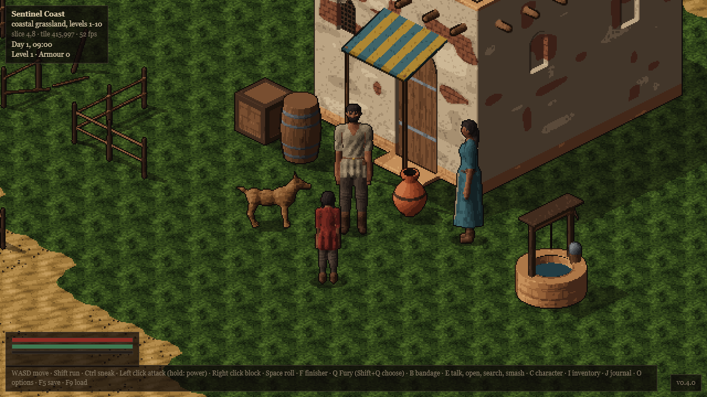

Hammerfell: art sample
Two candidate styles for the reset (design bible v0.3). Both are drawn by code while the page runs: small pixel figures posed from one skeleton, shaded with palette ramps, outlined. Pick one, or say what to take from each.
Every animation, every direction
Now: the current game
The current game, for comparison: large figures built from 3D shapes and rendered into sprite sheets ahead of time, eight directions.

What is the same in both
The figures are about 40 pixels tall, shown three times larger. The bodies, clothes and weapons are separate pieces, so new armour and weapons are cheap and limbs can come off. Swings have their own frames with held timings and a blade smear, and hits freeze for a split second, shake and knock back, as the game now does.
What this sample does not show
Buildings, towns, interiors, the desert, night lighting, finishers and gore beyond blood. Faces are a few pixels, so close-up expression would come from portraits in dialogue, not the sprites.